Package structure
ProximalBase supplies function objects and the operations used by optimization algorithms. The calling solver owns the iteration, stopping rule and working set. Inside the package, Julia's abstract types organize related functions, traits describe their capabilities, and multiple dispatch selects an operation for a function and an array type.
| Question | Main abstraction | Where to look |
|---|---|---|
| What mathematical function is represented? | AbstractFunction and its concrete subtypes | Losses, penalties, sets and wrappers |
| Which operations does it support? | Capability traits such as issmooth and isproximable | The interface |
| Can an update act on one entry or group? | SeparableFunction, grouped penalties and coordinate methods | Coordinate descent |
| How is the iterate stored? | SparseIterate, SymmetricSparseIterate, AtomIterate | Sparse iterates |
| Does an operation transform or delegate to another function? | Composition wrappers | Functions built from functions |
| Who owns temporary state? | Function-owned buffers and decomposition workspaces | State and device methods |
The figures show representative types and call paths. A box containing several names is a group of examples, not another Julia type. The relationships are checked against the source links below; the figures are a guide rather than a complete declaration inventory. Names shown for internal kernels and types explain the implementation and are not additional public extension points.
Reading the figures
| Edge | Meaning |
|---|---|
Thin arrow, --> | Subtyping, from subtype to parent; used in the type and storage figures |
Circle end, --o | Composition, from an object to something it contains |
Dotted arrow, -.-> | Dispatch or selection; the edge label identifies the choice |
Thick arrow, ==> | A runtime call or computational step |
Dotted edge labeled same binding | A compatibility alias, not a subtype |
Function types and traits

SeparableFunction supplies entrywise operations such as value_entry and prox_entry. Group penalties instead update blocks; the internal HomogeneousGroupNorm subtype identifies the positively homogeneous group norms used by shared kernels. GroupMCP and GroupSCAD use a different mathematical rule and are not homogeneous group norms.
Traits describe capabilities independently of this hierarchy. A function may be smooth, proximable, convex and separable at the same time. For example, SqrNormL2 has both a gradient and a proximal operator. A solver queries the traits instead of looking for a separate abstract class for every capability.
ScalarLoss is a separate hierarchy. GLMLoss contains a scalar observation loss together with its design and response data. LogisticLoss, PoissonLoss and HuberLoss construct specializations of GLMLoss. The qualified binding ProximalBase.AbstractGroupNorm is a compatibility alias for ProximalBase.AbstractGroupPenalty; it does not establish convexity or homogeneity. See Compatibility and migration.
Representative source: interface and traits, separable functions, group types, scalar losses and GLMLoss.
Public operations and their kernels

The mutating interface takes the output first: prox!(y, f, x, γ) and gradient!(g, f, x). The combined operations also return the function value, which lets a caller reuse work. The default gradient! delegates to value_and_gradient!; concrete methods can override that fallback.
| Example call | Principal computational path |
|---|---|
prox!(y, NormL1(λ), x, γ) | Separable array method → prox_entry → soft thresholding |
value_and_prox! for a group norm | Group method → group norm and shrinkage kernels → value at the output |
prox_coordinate! on an AtomIterate | Stored-coordinate lookup → scalar or group update, depending on the penalty |
gradient! for a GLMLoss | Linear predictor → scalar loss derivatives → transpose-design multiplication |
hessian_vec! for a GLMLoss | Scalar second derivatives → weighted design products |
quadratic_model for a GLMLoss | Working response and curvature weights → weighted least-squares model |
GLM quadratic models floor observation curvature; where the floor is active, the model is not the exact Hessian. Numerical helpers for scaled norms and exceptional products sit below these dispatch boundaries. They protect the corresponding kernels without adding public operations.
Representative source: separable methods, group kernels, second-order methods, numerical helpers.
Composition and constrained functions

Wrappers compose functions by containing them. Scaled, Tilt, Translate, Conjugate, Precompose, Regularize and MoreauEnvelope transform the mathematical problem and delegate suitable operations to their inner function. Sum, SeparableSum, SliceSum and FiberSum combine terms or split arrays into blocks. Their trait methods determine which operations the combination can provide.
Constrained(f, set) is a constructor that chooses a concrete wrapper by dispatch on the function and the set. A box-constrained scalar step clamps the inner proximal point. The caller must ensure that the constraint meets the domain of the inner function. Hyperplane and halfspace methods use a multiplier search with the limitations described in Functions built from functions.
Conjugate uses Moreau decomposition for a proximal step. Its combined value/prox method can use Fenchel equality at the computed point; this does not create a general standalone conjugate-value solver. Where the inner point γ prox_{f/γ}(x/γ) has a form free of the step (positively homogeneous functions and cones, the ℓ2 ball and the box, their translations and positive rescalings, and the double conjugate), the input is never divided by the step, and the result has the accuracy of a unit step, about eps times the largest input entry; with array steps and in prox_entry this covers only the indicator conjugates of separable functions, the box and the double conjugate. The other conjugates check that a finite input gives a finite result before writing.
Representative source: basic wrappers, compositions, scalar constraints, balls and spheres.
Iterates and coordinate storage

SparseIterate stores selected entries and index maps. SymmetricSparseIterate stores the lower triangle of a symmetric matrix; one stored off-diagonal coordinate represents two matrix entries. Its coordinate view is distinct from ordinary matrix linear indexing. AtomIterate stores dense data together with the active groups used by block updates.
Coordinate methods translate a storage coordinate into the appropriate entry or group. Full-array methods use the array interface or specialized stored-entry loops. See Sparse iterates before mixing storage coordinates with array indices.
Representative source: sparse and symmetric storage, atom storage and updates.
Matrix decompositions

Spectral applies an inner vector function to eigenvalues of a symmetric matrix; SingularValue applies one to singular values. The matrix primitives NuclearNorm, IndBallRank, TracePSD and IndPSD have dedicated kernels and an opt-in partial=true path.
The default uses a full decomposition. The partial path checks the represented subspace and can fall back to a full calculation. Those checks do not certify that every omitted leading direction was found. See Penalties and Sets for the numerical assumptions of each operation. The omitted-direction box annotates this limitation; it is not a runtime step.
Representative source: matrix primitives, partial decompositions, eigenvalue wrappers, singular-value wrappers.
State and device methods

Some function instances own mutable scratch buffers or decomposition workspaces, even when their outer Julia struct is immutable. Give concurrent callers separate instances when their operations reuse those buffers. reset_cache! traverses supported wrappers and invalidates documented loss-data caches. Some objects, including IndAffine, must instead be reconstructed after their defining data change.
Loading Adapt and GPUArraysCore activates the device extension. Adaptation of a grouped penalty builds a DeviceGroups wrapper containing the original function and a device group layout. Device methods use broadcasts, reductions and matrix products. Grouped prox! skips function-value reductions; the combined operation requests them from the same kernel. JLArrays checks the reference backend; it does not establish physical-GPU compilation or timing.
Loading Test activates the extension used by ProximalBase.Testing. Neither optional extension changes the public mathematical function hierarchy.
Representative source: cache reset, device methods and group layouts, Test extension.